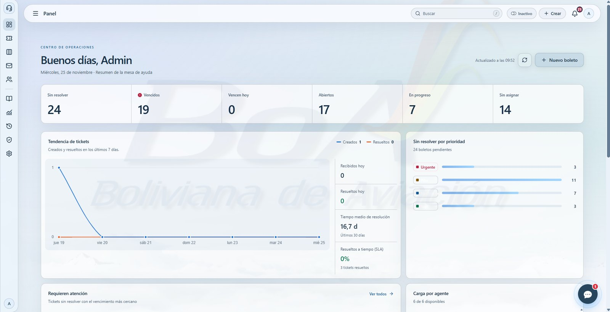
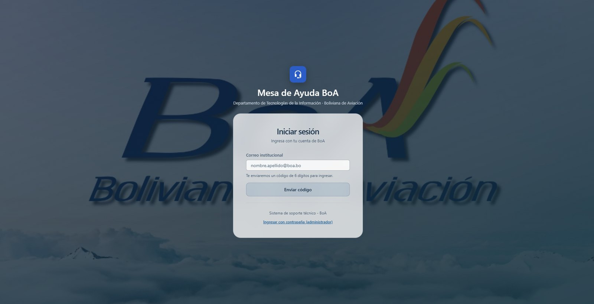

Proyecto destacado · En desarrollo
Help Desk BoA
Sistema propio de gestión de soporte técnico para Boliviana de Aviación. Centraliza las incidencias, asigna automáticamente al técnico adecuado y acelera la resolución con apoyo de inteligencia artificial.
- Angular
- Laravel
- PHP
- PostgreSQL
- API REST


🔒 Sistema de uso interno de BoA: el código fuente es privado.
- Controladores
- Servicios · lógica de negocio
- Repositorios · acceso a datos
-
Asignación automática
Algoritmo de carga ponderada que distribuye cada ticket al técnico más adecuado según su carga de trabajo actual.
-
Tickets desde el correo
Integración con correo electrónico: los mensajes entrantes se convierten en tickets sin intervención manual.
-
Asistencia con IA
Inteligencia artificial para apoyar la atención y agilizar la resolución de incidencias.
-
Base de conocimiento
Repositorio institucional de soluciones para reutilizar lo aprendido y reducir tiempos de respuesta.
-
Prioridades y SLA
Gestión de prioridades y acuerdos de nivel de servicio para atender primero lo crítico.
-
Seguimiento y notificaciones
Trazabilidad completa de cada incidencia y avisos oportunos a usuarios y técnicos.